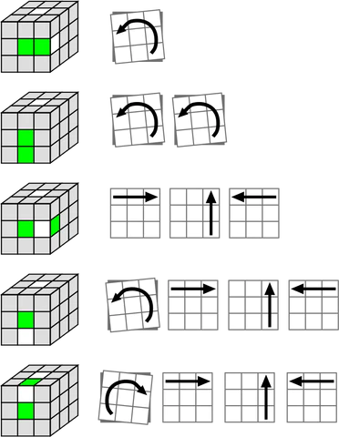

PRVNÍ KROK? - Dokončení bílého kříže
- Držení kostky s bílým středem nahoře
- Pootočení kostky se zeleným středem mířícím k nám
- Nalezení zeleno-bílé hrany a potažení s ní na některou z pozic uvedených níže
- Vyhledat obrázek, který ladí s Vaší situací a tahat dle šipek vedle


Ponecháním bílé nahoře a otočení krychle tak, aby k Vám směřoval jiný střed, docílíte následného složení zbývajících hran.
Vždy stačí jen přesunout bílé hrany na jejich místa, aniž byste poškodili ty již upevněné.
Může se občas stát, že se to nepovede. Vždy jde jen o klid a procvičování. S lehkou praxí docílíte výsledku na obrázku druhém.